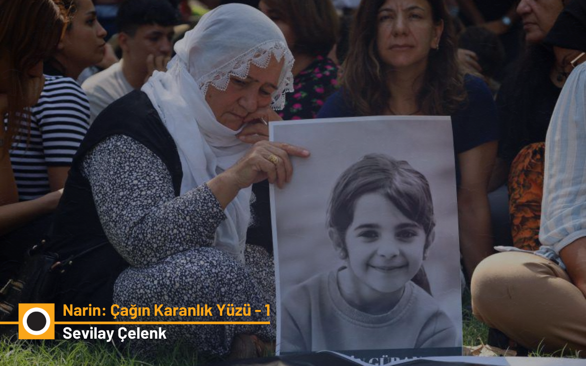

Narin: Çağın Karanlık Yüzü - 1
Birinci yıl sona ererken Narin Davası

Kötülüğün Sıradanlaşması
Narin’in ölümünün üzerinden neredeyse bir yıl geçti. O güzel çocuğun ve ailesinin başına gelenler çağın karanlık yüzünü gösterdi bize; “kötülüğün sıradanlaşmasını” ve herkesi içine almasını. Öncesi ve sonrasını kuşatan gelişmelerle Narin vakası, kötülüğün sıradanlaşmasını belki de modern Türkiye’de başka hiçbir olayda görmediğimiz bir sertlikle yüzümüze çarptı. Tümüyle sorumsuz davranıştan kaynaklanan ve ötekine karşı sorumluluk etiğini asla hatırlamayan, tarif etmeye kelimelerin yetmediği meşum bir olay. Büyük kötülük… Üstelik bu sorumsuzluk benzeri görülmemiş bir biçimde tersine çevrilebildi ve kayıp küçük bir kız çocuğuna sahip çıkma görünümüne büründü.
Sosyal medyada daha dün yapılan bir paylaşıma bakarsanız, aile katildi çünkü Narin’in evinin yakınındaki kayalıklarda “bardaktan boşanırcasına kan” vardı. İfade gerçekten bu! Kimse de demiyordu ki, ağzı burnu kapatılarak nefessiz bırakılmak suretiyle öldürülmüş bu çocuğun -bizzat kendisinin hâlâ kanayan bir yara olmasından başka- kanayan neresi vardı ki kayalıklara kadar kan yayılsın? İpe sapa gelmez iddialar ve yalanlar tekrar edip duruyordu.
Bu yalanları sosyal medyada sözüm ona bir gazetecilik faaliyeti kapsamında dur durak bilmeden dile getirenler de “Narin’e babalık etti!” diye yere göğe sığdırılamıyordu. Kimse demiyordu ki Narin’in bir babası vardı zaten. “Kızım için canımı verirdim” diyen bir babası… Narin’in suçsuz annesini, kardeşini ve amcasını evlerinden yüzlerce kilometre ötede birer hücrede yavaş yavaş öldürerek mi Narin’e babalık ediyorlar? Narin’i bin kez daha öldürmekten, hatırasını lime lime etmekten başka ne işe yaradı bu Narin için güya adalet arayan kişiler?
Dehşete düşüren bir sorumsuzlukla yalanlar devam etti, devam ediyor. Güran Ailesinin ve Tavşantepe Köyü’nün başına gelenler kıyamet alameti gibi. Deccal zuhur etmiş gibi… “Deccal; yalancı, hilekâr, hakkı bâtıla, iyiyi kötüye karıştıran kimse” manasına geliyor biliyorsunuz. İşte böyle. Nereden başlasam bilemiyorum…
Bu günlerde bir yandan Narin olayındaki gelişmeler, bir yandan Sırrı Süreyya Önder üzerine bir şeyler yazmak istiyordum. Fakat mümkün olmadı. Bir koşturmaca içinde, bu yazıları ayrı ayrı yazmaya fırsat bulamadım. Fakat bugün fark ettim ki bu iki konu zihnimde birbiriyle konuşturup durduğum ve birbirine teğellediğim konular. Sırrı Süreyya Önder’in bunca sevilmesi büyük ölçüde başka hayatları ve hikayeleri anlamaya açık olmasıyla, diğer bir deyişle bilgeliğiyle ilişkili. O gerçekten de hikayelerden geçerek hakikatle derin ve güçlü bir bağ kurabilme yeteneğine sahip istisnai isimlerden biriydi. Narin olayında da aslında tam olarak böyle oldu. Sırrı Süreyya, dile getirmek için çırpınıp durduğum hakikati, yazdığım yazıdan ve verdiğim söyleşiden okuduğu anda derhal süzüp çıkarmıştı. Eminim ki bu olayın medya ve yargı düzeninin neredeyse tümden çökmesi ve birçok hukuk insanının da bu çöküşten kaçamamasıyla ilişkisini ve dolayısıyla politik karakterini de hızla kavramıştı. Yazının ilerleyen sayfalarında bunları anlatmaya çalışacağım. Ama korkarım ki uzun bir yazı olacak. Bu nedenle yazıyı sizin için girişi takip eden beş kısma bölüyorum. Her gün bir bölümünü yayınlayacağız.
Yeni gelişmeler
Geçen zaman içinde çok şey oldu. Her şeyden evvel tanınmış adli bilişimci Tuncay Beşikçi Narin’in katledildiği olay gününe ait Yüksel, Enes ve Salim Güran’ın internet trafiği imaj kayıtlarını analiz etti ve raporlaştırdı. Beşikçi ayrıca gerekçeli karara ve aile üyelerine verilen müebbet hapis cezalarına esas teşkil eden “daraltılmış baz kaydı” çalışmasını da inceledi. Sayesinde, geriye dönük daraltılmış baz kaydı denen çalışmanın dünyanın hiçbir yerinde ciddiye alınmayacak türden, tümüyle geçersiz bir çalışma olduğunu tam olarak kavradık.
İnternet Trafiği ve Masumiyetin Kanıtı
Aslında ailenin müebbet hapse mahkum edilen üç üyesinin olay günü ve saatindeki internet trafiği bilgisi ve imaj kayıtları, dava kapsamında daha evvel de mevcut ve ulaşılabilir durumdaydı. Gel gelelim, karar duruşmasında aile avukatlarının bütün ısrarına rağmen bu bilgi dikkate alınmamış ve söz konusu internet trafiğinin içeriğinin incelenmesi beklenmeden karar açıklanmıştı.
Tuncay Beşikçi’nin raporuyla anlaşıldı ki bu kayıtlar aile üyelerinin masumiyetini tümüyle açığa çıkaran veriler içeriyordu. Aile üyeleri olayın kritik saatlerinde ifadelerinde ne demişlerse tamamen onu yapmışlardı. Salim kendi evinde, Enes ve Anne kendi evindeydi. Esasen bu bilgi zaten tanıklıklarla da sabitti. Altı yaşındaki Eren’e bile aksini söylettirmeleri mümkün olmamıştı. Ama kimse bu basit gerçeği dikkate almak istemiyordu.
Sansasyonun Yerini Alan Troll Ordusu
Narin davasında, hükmün açıklanmasının ardından geçen zaman içinde olaya yoğun ilgi gösteren bir kesim sahneden çekilmiş ve adalet inşasına tümden kayıtsızlaşmıştı. Sahne, sansasyonel adli olaylar üzerinden isim yapan ve gelir elde eden bazı ucubik kurumlara ve sosyal medya fenomenleri ile bir troll ordusuna kalmıştı. Güran Ailesinin mahvolmasını istiyorlardı. Çok gariptir ki artık ailenin gerçekte suçlu olup olmaması da onları ilgilendirmiyordu. “Bir kız çocuğuna sahip çıkamamışlarsa, bu cezayı zaten hak ediyorlar” diyen bile vardı! “Allah kimsenin çocuğunu kötülükle karşılaştırmasın” diyemiyorlardı…
Her şey çok tuhaftı. Mesela Nevzat Bahtiyar’ı savunan avukat tıpkı bir troll gibi davranıyor ve ne kadar kafa karışıklığı yaratırsa kâr sayıyordu. Benzerini birkaç yıl evvel Ankara’da gencecik yaşta katledilen öğretim elemanı Ceren Damar’ın katilini savunan avukatta gördüğümüz türden vahim bir savunma pratiği sergiliyordu. Hükme esas teşkil eden gerekçeli kararı bizzat kendisinin çöpe attığının bile farkında olmadan yine çöpe gidecek türden yeni iddialar ortaya atıyordu. Mesela, Narin’in eve gelip bir şeye tanık olduğu için değil, mealen söylersem kursa gitmeden evvel bir şeylere tanık olduğu veya başına bir şeyler geldiği için öldürüldüğünü söylüyordu. Başka bir gün ise o gün köyde olmadıkları mahkeme süreçlerinde sabit olan kuzenleri filan olay yerinde göstermeye çalışıyordu. Cezaevi hücresindeki çaresiz anneyi ve Enes’i suç teşkil edecek biçimde ve vicdansızca hedef gösteriyordu. Kısacası, mesnetsiz ve dur durak bilmeyen korkunç bir iftira ve karalama kampanyasının adı “Narin’e adalet” olmuştu.
UKB Raporu ve Karartı İddiası
Gerekçeli karara esas teşkil eden iki temel çalışmadan biri darbaz ise bir diğeri de Ulusal Kriminal Büro’nun (UKB) görüntü iyileştirme ve raporlama çalışmasıydı. Bu çalışma, Narin’in güya patika yolu yürüyerek tepeye çıktığını belirtiyor ve çocuğu ailesine ait ahırın önünde bir karartı olarak saptıyordu. Gelgelelim UKB raporu, gerekçeli karara göre aynı patikadan bir iki dakika içinde inip çıktığı varsayılan diğer iki kişiyi hiç göremiyordu. Sözüm ona çocuğun cansız bedenini almak üzere Güranlar’ın evine giden Nevzat ve arkasından çocuğu içinde taşıdığı battaniyeyi ondan geri almak üzere aynı yolu yürüyen Amca Salim, raporda tespit edilemiyordu. Dolayısıyla zaten kökten biçimde sorunlu bir inceleme olduğu ailenin avukatları tarafından çok net biçimde ortaya koyulan bu incelemedeki sorunlara, adli bilişimci Tuncay Beşikçi de ayrıntılı olarak değindi.
Beşikçi, bir karartının ceza yargılamasında delil sayılmasındaki acayipliği etraflıca ortaya koydu. Ayrıca Narin’in ve hareketliliğin görüldüğü nokta olarak işaret edilen yerin kayalık ve çalılık alan olduğu da anlaşıldı. Narin addedilen karartının ise asla Narin olamayacağı, zira olaydan bir saat sonra bile aynı karartının hâlâ aynı noktada durmakta olduğu açıklandı. Bu delillerin istinafa sunulmasını müteakip aile üyelerinin, Salim Güran dahil bir dakika bile cezaevinde kalmaması beklenirdi. Zira Salim Güran bu dakikalarda zaten neredeyse kesintisiz bir biçimde internette dolaşmakta ve arka plan hareketi olarak değerlendirilemeyecek bir internet kullanımı gerçekleştirmekteydi. Aynı telefonun başkasında değil, kendisinin üzerinde olduğunu da zaten mahkemenin gerekçeli kararı bize söylüyordu. İnternette dolaşırken aynı zamanda cinayete iştirak etmesi herhalde makul hiç kimse tarafından iddia edilemezdi.
İstinaf Süreci ve Mahkeme Başkanının Şerhi
Bütün bunların yanında, istinaf sürecinde mahkeme başkanı da gerekçeli karara uzun bir şerh koyarak itiraz etmişti. İstinaf dilekçeleri, Diyarbakır 8’inci Ağır Ceza Mahkemesi’nde incelenmiş ve değerlendirme için Diyarbakır Bölge Adliye Mahkemesi 1’inci Ceza Dairesi’ne gönderilmişti. Dosyayı ve başvuruları inceleyen Daire, 26 Mayıs’ta, dört sanık hakkında verilmiş olan hapis cezalarını oy çokluğuyla onamıştı. Mahkeme Başkanı ise karara şerh koymuş ve gerekçelerini uzun uzun sıralamıştı. Başkanın şerhinde dosyadaki kamera kayıtları, baz raporları ve DNA bulgularının eksik ve yetersiz incelendiği, özellikle Nevzat Bahtiyar’ın hareketlerinin detaylı görüntü analiziyle netleştirilmesine ihtiyaç duyulduğu da belirtilmişti.
Anne Yüksel Güran, oğlu Enes Güran ve Amca Salim Güran’ın Narin’i eve gelmesinin hemen ardından dakikalar içinde ve müşterek fail olarak öldürmelerinin akla ya da hayatın olağan akışına uygun olmadığı ifade edilmişti. Başkanın şerhinde ayrıca, PSA ve kıl örnekleri gibi kritik delillerin bilimsel olarak yeterince araştırılmadığı, tüm bu eksik incelemeler nedeniyle kararın bozulması gerektiği söylenmekteydi.
Hindistan Raporu ve Yeni Bulgular
Bu tarihten sonraki bir diğer gelişme de Hindistan merkezli Brilliant Forensic Investigation (BFI) adli bilişim şirketinin hazırladığı raporda, Narin’in Nevzat Bahtiyar’ın evini geçemediği ve bu evin yakınında kaçırıldığının tespit edilmesiydi. Narin kendi evine hiç gidememişti. Hindistan’ın bilişim teknolojileri alanında dünya çapındaki ünü ve başarısı iyi biliniyor. Raporda, daha önce hazırlanan UKB ve Alman uzman raporlarının hatalı olduğu da ifade edilmekteydi. Söz konusu BFI raporu, Salim Güran’ın avukatı Onur Akdağ tarafından temyiz dilekçesine eklendi ve Yargıtay’a sunuldu.
Mahkeme Kararının Çöküşü
Tüm bu gelişmeler zaten çok problemli olan mahkeme kararının Yüksel, Enes ve Salim için sonuçlarını ortadan kaldırmalıydı. Çünkü mevcut durumda bu müebbet hapis cezalarını haklı kılan bir tek ama bir tek sağlıklı, sorunsuz ve somut delil söz konusu değil. Oysa durumun bunun tam aksi olduğuna tanıklık eden çok kişi ve istinaf aşamasında sunulmuş çok delil var. Olayın başında eldeki en somut bilgi, Nevzat Bahtiyar’ın 19 gün boyunca ailesiyle birlikte Narin’in ailesini ve bütün kolluk güçlerini yanılttığı, onlara aramalarda eşlik ettiği, aileyi sözüm ona teselliye çalıştığı ve bu kirli oyunu yakalanana kadar sürdürdüğüydü.
Günler sonra bir çiftlik kamerasının kaydettiği görüntülerden, çocuğun cansız bedenini taşıdığı anlaşılan kırmızı araç tespit edilinceye kadar da tek kelime konuşmadı. Kırmızı aracın Nevzat tarafından kullanıldığı tespit edildiğinde, Nevzat Tavşantepe’deki kendi evinde değil, oğlunun Çarıklı’daki evindeydi ve oraya baskın yapılıncaya kadar da ortaya çıkmamıştı. Narin’in cansız bedenini ayağında terliği ve boynunda çantasıyla birlikte çuvala koyduğunu, arabayla Eğertutmaz Deresi’ne taşıdığını o gün mecburiyetten itiraf etmek zorunda kaldı.
Çocuğun bedenini orada yine çuval içinde dere kenarındaki bir çukura yerleştirdiğini üzerine büyük bir taş koyduğunu ve her iki yanında da birer taş bulunduğunu, yani çocuğun bedenini üç taşın altına gizlediğini ilk ifadesinde söyledi. Nevzat Bahtiyar bu soğukkanlı ifadeyi sonradan iki noktada değiştirdi: Karar duruşmasında, Narin’in bedenini baba evinden güya kucağında taşıyarak evden çıktığını anlatırken (beklemediği anda gelen “Peki terlik neredeydi” sorusu karşısında epeyce duraksamayla), terliği, Salim’in giriş kapısından alarak kendisine verdiğini söyledi. Çocuğu ardına gizlediği, taşların sayısını da, diğer iki taşı sonradan Salim’in Eğerturmaz Deresi’ne giderek koyduğu iddiasını güçlendirmek üzere bire düşürdü. Oysa şu videoda üç taştan söz ettiği ilk ifadeyi hâlâ izleyebilirsiniz.
Kısacası dünya üzerinde benzeri görülmemiş türden tuhaf bir yargılama süreci sonucunda, çocuğun bedenine dokunduğu, taşıdığı ve çocuğu gömdüğü sabit olan tek kişinin, yani Nevzat Bahtiyar’ın ifadesiyle, haklarında bir tek ama bir tek somut delil olmayan üç acılı aile üyesi müebbet hapis cezasına çarptırıldı. Karar Yargıtay sürecinde de böyle kabul görürse, Nevzat Bahtiyar çok değil bir iki ay sonra cezasını tamamlamış olarak aramızda dolaşmaya başlayacak…
DNA ve Terlik Tutarsızlığı
Çocuğun bedeninde istismar bulgusu olduğunu da hatırlarsak, aile üyelerinin cezaevinde çürümesini isteyen ve her tür sağlıklı, somut ve güvenilir bilgiye direnenlerin, kimin yanında saf tuttuğunu bir kez daha düşünmeleri gerekir. Hiçbir açıklamayı, hiçbir raporu okumaya ve incelemeye zahmet etmeden aileyi fanatik birer taraftar psikolojisiyle suçlayanlar, ailenin suçsuz olduğunu savunan her yazı, paylaşım ve mesajın altına, “Ama arabadaki DNA, ama Narin’in avucundaki saç” diye yazmaya devam ediyor. “Narin, katilini avucunda sakladı” diyerek cinayeti romantize edenler var.
Sonuçta bu nefret dolu ve sorumsuz tutumu değiştireceğini sanmıyorum ama bir kez daha açıklamak isterim: Çocuğun DNA’sının amcanın arabasında olmasından daha doğal bir şey yok. Zaten Narin’in ailesi de kızlarının o arabaya yakın tarihlerde bindiğini kendileri söylemişti. Bu DNA’nın herhangi bir kusmuk ya da ölüm sıvısından elde edildiği iddiası mahkeme süreçlerinde hiçbir şekilde doğrulanamadı. Arabada birden fazla noktada DNA olması da Narin’in, hayatta ve hareketli iken arabada bulunduğu savına uygun görünüyordu.
Her şeyden öte, Nevzat Bahtiyar aile üyelerinin müebbet hapse mahkum edildiği karar duruşmasındaki ifadesinde Narin’i kendi aracıyla taşıdığını söylüyor. Nevzat’ın bu son ifadesine inanan herkes, çocuğun bedeninin ölümden sonra Salim’in aracına hiç temas etmediğini ve o DNA’nın çocuğun canlı iken araçta bıraktığı bir DNA olduğunu da kabul etmek zorunda. Eğer Nevzat yine yalan söylüyorsa, çocuğu Salim Güran’ın kendisine nasıl ve nerede verdiğine dair çok sayıda yalan ifadenin yanına bu ifadenin de eklenmesi gerekir. Bu durumda da, sebepsiz yere bu kadar yalan söyleyen ve bütün aileyi müebbet hapse mahkum ettirecek biçimde mahkemeyi yanıltan bir kişinin, çocuğu bizzat kendisinin öldürmüş olma ihtimali nasıl bu kadar kesin biçimde devre dışı bırakılabilir ki?
Nevzat yine yalan söylüyorsa, bu yalanların başkasını değil, kendi suçunu gizlemeye yaradığı da gün gibi ortada demektir. Çünkü geçen bir yıla yakın zaman içinde başka hiçbir şeyi ve hiç kimseyi işaret eden bir bulgu ortaya çıkmadı. Cinayete ilişkin başka en ufak bir somut delil filan olsaydı, ailenin ve bütün köyün gördüğü bunca eziyetten sonra bunun açığa çıkmamış olması mümkün olmazdı. “Nevzat yapsaydı, bir köyde bunu gören muhakkak olurdu” diyenler, etrafta başka evin olmadığı bir patikanın kuytusunda, bir çocuğa dakikalar içinde hiç kimseye görünmeden bir kötülük yapılabileceğine inanmak istemiyor.
Oysa sadece 23 kilo ağırlığındaki bir çocuktan söz ediyoruz… Narin’e bu kötülüğün kendi evinde ve kendi aile üyeleri tarafından müştereken yapıldığına inanmak daha konforlu geliyor. O küçücük çelimsiz çocuğun her nasılsa o esnada ağabeyinin gözünü morarttığı, vücudunda sıyrıklar oluşturduğu, kolunu ısırdığı ve annenin de saçını yolduğuna inanıyorlar. Bunun imkansız olduğunu söylediğinizde, bu kez Enes’in gözündeki morartıya veya kolundaki ısırığa, çocuğa zarar verirken yakalandığı anne ya da amcanın yol açmış olabileceği söyleniyor…
Bunlar başa çıkılması çok güç, kötücül bir hayal gücünden başka hiçbir somut delile dayanmayan argümanlardır. Gerekçeli kararla üç aile üyesine müebbet hapis cezası verilmesine katkıda bulunan hukukçuların hiçbiri ne yazık ki bu kötücüllüğü, bu dezenformasyonu ve dedikoduculuğu aşan rasyonel bir argüman ortaya koyamadı.
Çocuğun avucundaki saç teline gelince, mitokondriyal DNA incelemesi sonucunda, “anasoyuna ait olduğu” kesinleşen bu 29 cm ve kahverengi saç teli, ne renk ne uzunluk olarak annenin ya da erkek kardeşlerin saç teli olamıyor. Anasoylu olduğunun tespiti, bu saç telinin Narin’in bizzat kendisine ait olabileceği anlamına da geliyor ki gerek saç telinin uzunluğu gerek çocuğun ölüm şekli düşünüldüğünde, bu çok daha akla yakın bir ihtimal. Zira boğularak katledilen bir yavrucağın boynundaki elden kurtulmak isterken kendi saçının eline dolaşması, avcuna sıkışması çok mümkün. İnsanın kendi giysisi üzerindeki saçların en yüksek olasılıkla kendine ait olması gibi. Nitekim ailenin avukatlarından sonra bugün bir adli tıp uzmanı da bu kanaatte olduğunu söyledi.
Absürt İddialar ve Köy Dedikoduları
Bütün bunları ayrı ayrı anlatıp, “O şunu dedi, bu bunu dedi” gibi köy yeri dedikodularının asılsızlığına dikkat çektiğinizde, bu sefer, “Bu çocuk kendi kendini mi öldürdü, köyden geçen overlokçu mu onu öldürdü” gibi gerçekten insanı isyan ettiren yorumlar alıyorsunuz. Bu durumu da artık sanırım psikanalistlerin ve sosyal psikologların filan analiz etmesi gerekiyor. Koca ülke adeta hipnotize edilmiş gibi diğer seçeneğe, katilin basitçe Narin’i taşıyan ve gömen kişi olabileceği gerçeğine gözünü kulağını tümden kapatmış görünüyor.
Sanırsın ki yargı süreçlerinde sayısız yalan söyleyen ve herkesi yanıltan kişi bir hayalet… Cinayet filan işleyemez yani! “Nevzat bu cinayeti işleseydi, aile onu asla sağ bırakmazdı” deniyor. Tek argümanları bu. Zaten çok saçma bir genel geçer mantığa yaslanan bu argümanın ne derece temelsiz olduğuna ayrıca değineceğim ama esas olarak Nevzat yakalandığında amca zaten tutukluydu. Narin’in bedeninin bulunduğu gün de annesi, babası, ağabeyi Enes ve amcaları yanında, aileden ve köyden onlarca kişi daha gözaltına alındı. Dolayısıyla sağ bırakılmaması gibi bir ihtimal söz konusu değildi. Bundan da öte herhangi bir ailenin böyle bir konuda hukuk dışı yollarla çözüm arayacağı, kesin bir bilgi gibi öne sürülemez. Güran Ailesinin köydeki tarihi bakımından da bu savı destekleyecek hiçbir veri yok.
En absürt olanı da aileye suç atan ve Nevzat’ı savunanların bütün iddialar çürütüldüğünde bu kez olay gün ve saatinde Narin’in yürüdüğü patika yol üzerindeki kalabalıklardan, insanlardan koşturmacalardan falan söz ederek bütün köyün işin içinde olduğuna dair bir kafa karıştırmaya yönelmeleri. Bunun içinde Nevzat’ın kendi avukatı da var. Kimse demiyor ki o zaman Nevzat’a “Kimdi bunlar” diye niçin sormuyorsun? Çünkü o dakikalarda orada en azından patlıcan sulamak üzere bulunduğunu bizzat kendi söylemişti. Kısa süre sonra Arif’inin evine gittiğini ve oradan aldığı çocuğun bedenini ahıra taşıdığını da. Görüldüğü üzere vicdansızca söylenen yalanlar giderek tutarlılık kaygısını da tümden bir tarafa atıyor.
Kısacası cinayette Güran ailesinin, açığa çıkmamış başka bir maksadı, saiki ya da motivasyonu olduğuna inanmaya devam ediliyor. Üstelik bütün köyün de yediden yetmişe distopik bir bilim kurguda bile olamayacak bir ketumlukla bu sırra iştirak ettiği örtük ya da açık olarak savunuluyor. Oysa Bernard Williams’ın Hakikat ve Hakikatlilik başlıklı kitabında söylediği gibi “herkesin birbirinin işine burnunu sokması, köylülerin yorucu bir özelliğidir. Aslında küçük geleneksel toplumlarda tipik olarak yalandan geçilmez, çünkü herhangi bir şeyi sır olarak saklamak çok zordur.” (s.152).
Küçük bir köyde olaydan birkaç saat sonra, henüz Narin’in başına nasıl korkunç bir şey geldiği bilinmeden ve muhtemelen bir yerlerden çıkıp geleceği varsayılarak söylenen küçük çocuksu yalanları ya da kafa karışıklıklarını kabul edememek anlaşılır gibi değil. Köy atmosferinin bu basit gerçeği reddediliyor. Bir köyün gelecek kuşaklarını bile çoktan travmatize etmiş ve açıkçası hepsinin itibarını mahvetmiş olan bu süreçte, bir yıldır açığa çıkarılmamış bir sırrın varlığına inanılıyor. Çünkü inanmak isteniyor. Çünkü bir kez inandılar… “Yanıldık” demektense bunda ısrar etmek daha kolay geliyor.
Kötülüğün Yaygınlaşması
Çağın karanlık yüzü dediğim şey bu… Kötülüğün sıradanlaşması ve herkesi içine alması dediğim şey bu. Narin’den sonra onun en sevgililerinin, suçsuz annesinin, 18 yaşındaki ağabeyinin bir hücrede ağır bir tecrit altında yavaş yavaş öldürülmekte olduğu hakikati inanması güç ama birçok kişiyi hiç rahatsız etmiyor. Olayın tutuşturduğu polisiye heyecanın ateşi söndü. Tavşantepe Köyü’nden, köylü bir aileden kime ne? Gazetecisi, televizyoncusu, hak savunucusu, hukukçusu, hepsi kendi evinde, kendi işinde gücünde…
Peki aile ne yapıyor, bu kıyametvari bir yılın sonunda ne haldeler? Bir hafta kadar önce, anne Yüksel ve oğlu Enes’i görmek amacıyla Erzincan’a gitmek üzere bindiğim ve geceyarısı 00:05’te Ankara’dan havalanan uçakta da bunu düşünüyordum. Yarın anlatacağım.